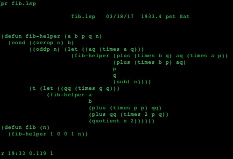
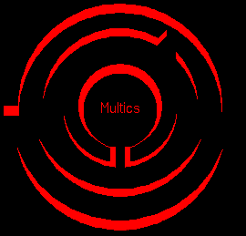
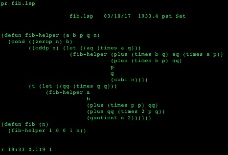

Schéma d'anneaux de privilèges (rings) à 3 niveaux
Schéma d'anneaux de privilèges (rings) à 3 niveaux
Schéma d'un système de gestion hérachique des fichiers

Shell
Multics est un systeme d'exploitation acronyme de MULTiplexed Information and Computing Service.
Le un projet MULTICS est lancé en 1964, par Fernando Corbató et Jerry Saltzer sous Licence Du MIT. Ce système est connu pour
plusieurs éléments le définissant comme novateur. Notamment le système de fichier hiérarchique, le temps partagé,
le multitâche préemptif, le multi-utilisateur et l’aspect sécurité des systèmes d’exploitation.
Tout l’intérêt de ces avancée a surtout été mis en avant après leur réutilisation et leur diffusion dans les systèmes Unix.
Pour simplifier on peut dire que MULTICS est en quelque sorte l’ancêtre d’Unix qui lui même découlera sur tous les systèmes d’exploitation actuels.

Logo de Multics
Il faut savoir que MULTICS lui-même succède à un autre système d’exploitation qui est CTSS ( Compatible Time-Sharing System ).
De celui-ci il reprend le concept de temps partagé autorisant plusieurs utilisateurs à utiliser
la même machine en même temps, mais aussi le système d’invite de commande qui est l’ancêtre
du shell actuel et enfin le principe de traitement de texte.
Cependant Multics a aussi apporté de nombreuses nouveautés, dans un premier temps en mettant en place
la notion d'anneaux (Rings) destinés à sécuriser le système d'exploitation.
Ce systeme se bassant sur le principe d'obliger a passé
par toutes le gateways pour accèder a un niveau inférieur sur la machine. Les niveaux allant de 0 à 6, le niveau 0 correspondant au
noyau et étant donc le plus protéger
et le niveau 6 celui des applications utilisateur.
Multics avait aussi pour caractéristique de supporté la segmentation de la mémoire, la mémoire virtuelle,
l'implémentation de langages de haut niveau et la pluralité des langages de programmation.
De plus Multics avait un système de gestion hérachique des fichiers avec des chemins pouvant avoir une taille et des caractères arbitraire ce qui
permettait les liens symboliques et les périphériques amovibles.
Schéma d'anneaux de privilèges (rings) à 3 niveaux
Schéma d'un système de gestion hérachique des fichiers

Shell
Multics fut concut pour pouvoir effectuer des calculs très rapidement depuis un distributeur central vers les clients. Cependant le produit concu pour être distribué
par General Electric le fut finallement par Honeywell et eu au final peu de succès.
En France Multics fut largement distribué dès le début des années 80 principalement dans le monde universitaire.Le Centre Inter-Universitaire de Calcul de
Grenoble (CICG) disposa, au début des années 1980, d'un ordinateur HB68 equipé de Multics et fut utilisé pour la recherche.
Multics avait aussi pour caractéristique de supporté la segmentation de la mémoire, la mémoire virtuelle,
l'implémentation de langages de haut niveau et la pluralité des langages de programmation.
De plus Multics avait un système de gestion hérachique des fichiers avec des chemins pouvant avoir une taille et des caractères arbitraire ce qui
permettait les liens symboliques et les périphériques amovibles.
Multics a été enseigner en dans les années 70 dans les université comme Paris VI - Jussieu au sein de "l'Institut de Programmation,
DEA de Programmation et Recherche Opérationnell.